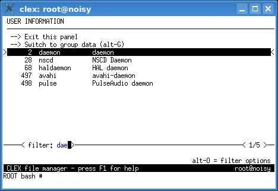
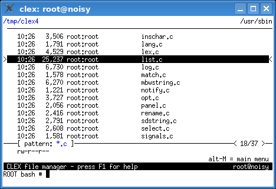

This function helps to find an entry in a long listing quickly. It is available in the file panel (file names), the completion panel, the directory and the bookmark panels (directory names), the history panel (commands), the user/group panels (user names), and the log panel.
The filter exists also in the help panel in an altered form of the find text function.
Start with pressing the ctrl-F key, then type in some string appearing in the name(s) you are looking for. While you type, the panel contents shrink to display only entries containing the string you have entered.
There are several options affecting the filtering process. Press Alt-O to display them.
Finally press:
Pasting text (usually with the tab key) from the filtered panel into the input line moves the cursor from the filter to the input line.
In the file panel, a pattern can be used as a filter expression as well.
If the filter expression contains the wildcards * ?
or [] then it is automatically used as a pattern.
In order to use those special characters in a normal filter (substring) you have to quote
them, e.g. with a preceding backslash.

